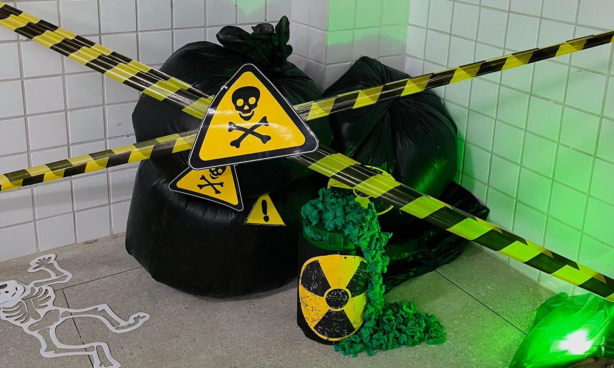
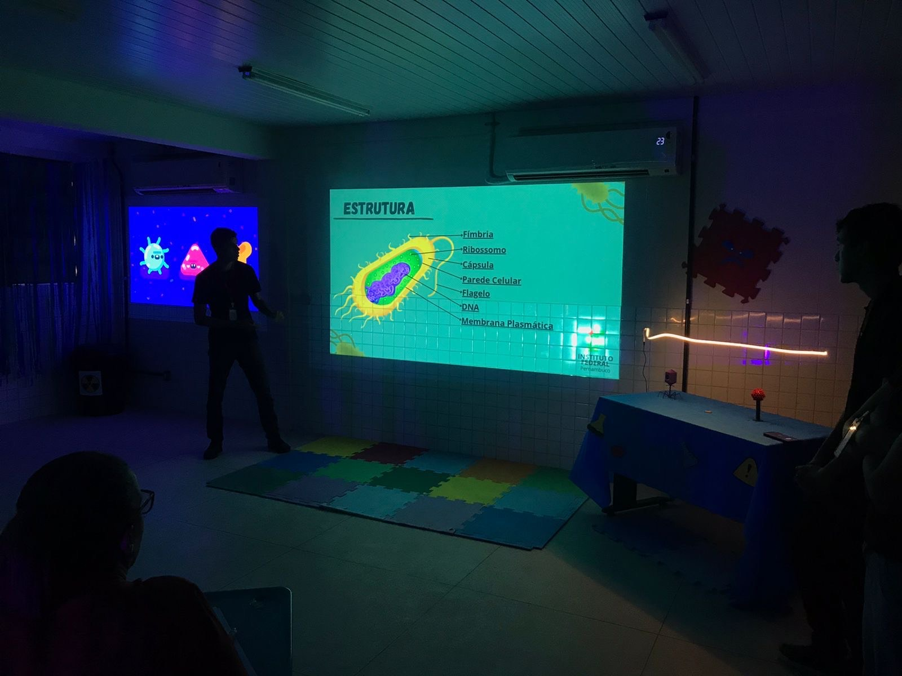
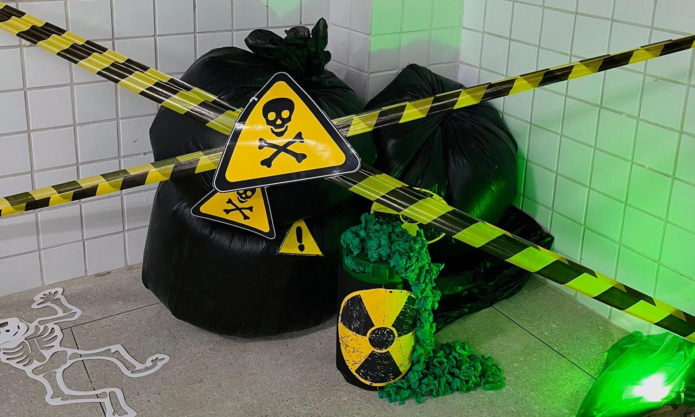
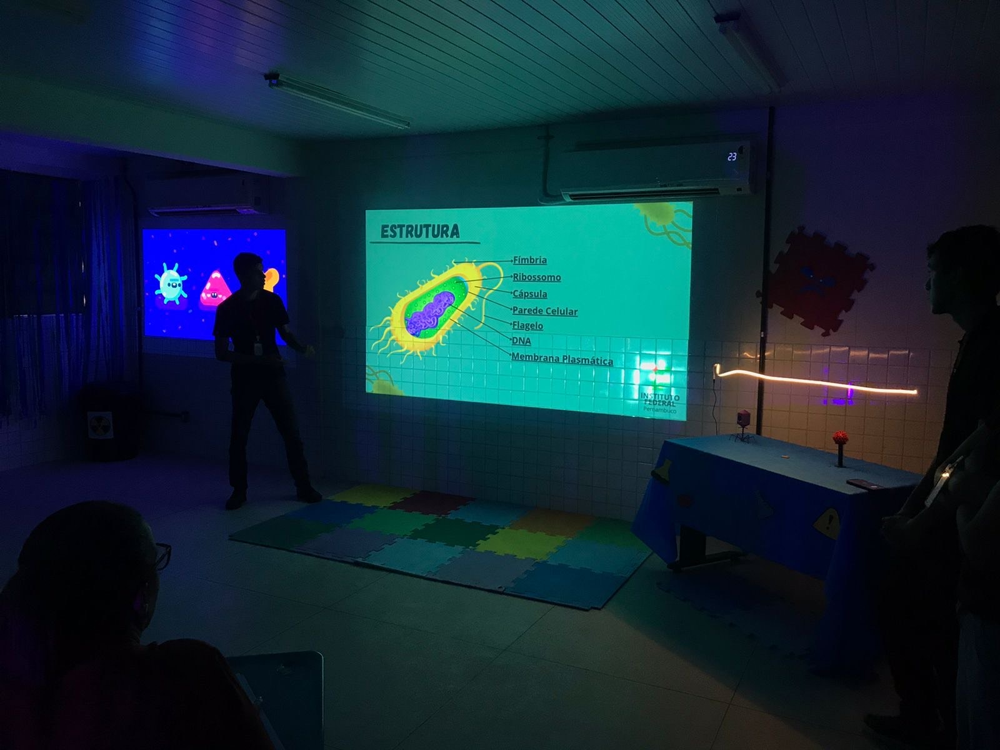

Metodologia
1. Aprendizagem Ativa e Experiencial
No Projeto Biomaker, a aprendizagem ativa é o eixo principal. Em vez de apenas consumir informações de forma passiva, os alunos do IFPE Campus Palmares são incentivados a se envolver diretamente no processo de construção do conhecimento. A criação de modelos tridimensionais de organismos biológicos, como o vírus envelopado, o vírus bacteriófago e a bactéria, faz com que os estudantes explorem os conceitos de forma prática e visual. Ao projetar e imprimir esses modelos, os alunos não só aprendem sobre biologia de maneira profunda, mas também se tornam protagonistas em sua própria jornada de aprendizado.
2. Integração da Tecnologia ao Ensino de Biologia
Uma das inovações do Projeto Biomaker no IFPE Campus Palmares é a utilização de tecnologias avançadas, como a impressão 3D e a modelagem digital, para complementar o ensino de biologia. Ao aprender a usar softwares de modelagem 3D, os alunos ganham uma compreensão mais detalhada das estruturas microscópicas que estudam. O uso da impressão 3D permite que os conceitos biológicos sejam representados de forma tridimensional, oferecendo uma nova perspectiva sobre organismos que, de outra forma, poderiam parecer distantes ou difíceis de compreender.
3. Trabalho Colaborativo e Desenvolvimento de Competências Interpessoais
A colaboração é um dos pilares centrais da metodologia do Projeto Biomaker. Os alunos do IFPE Campus Palmares trabalham em grupos, compartilhando ideias, conhecimentos e habilidades para alcançar os objetivos do projeto. O trabalho em equipe favorece a troca de experiências e a construção coletiva do conhecimento, além de proporcionar o desenvolvimento de habilidades interpessoais essenciais, como comunicação, negociação, empatia e liderança.
4. Abordagem Interdisciplinar e Aplicação do Conhecimento
A metodologia do Projeto Biomaker no IFPE Campus Palmares também se caracteriza pela interdisciplinaridade, uma vez que combina biologia, tecnologia e design. Os alunos não apenas aprendem sobre organismos biológicos, mas também exploram como a ciência e a tecnologia podem ser aplicadas de maneira prática para resolver problemas reais.
5. Ciclo de Feedback e Reflexão
Outro aspecto importante da metodologia do Projeto Biomaker é o ciclo de feedback e reflexão. Ao longo de todas as fases do projeto, os alunos são incentivados a refletir sobre suas descobertas, fazer ajustes e buscar melhorias nos modelos e nas estratégias adotadas.
6. Avaliação Contínua e Engajamento no Processo de Aprendizagem
A metodologia do Projeto Biomaker enfatiza a avaliação contínua, que leva em consideração não apenas o resultado final, mas também o progresso dos alunos ao longo do projeto. As avaliações são feitas de forma qualitativa, levando em conta a participação, o desenvolvimento de habilidades técnicas, a capacidade de trabalhar em grupo e a reflexão crítica sobre o aprendizado.
Conclusão
A metodologia do Projeto Biomaker no IFPE Campus Palmares oferece uma abordagem inovadora que combina aprendizado ativo, tecnologia de ponta, colaboração e reflexão crítica. Ao integrar biologia e impressão 3D, o projeto proporciona aos alunos uma experiência única de aprendizado, que não apenas aprofunda o conhecimento científico, mas também desenvolve habilidades essenciais para o futuro, como o pensamento crítico, a resolução de problemas, o trabalho em equipe e o domínio de novas tecnologias.
 


